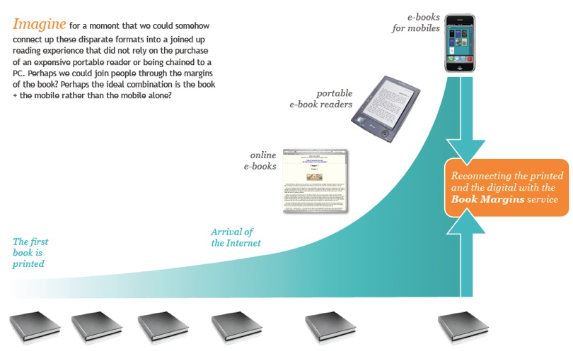

Book Margins - Connecting people through the margin, 2008

People have been writing in the margins ever since the book was first
printed. These annotations help to personalise our experience of reading and
allow others to see books through our eyes. As digital technology develops, these
annotations have spread across the internet, spawned by online services like
Google books, Librarything, Amazon and countless other services.
People have experimented with blogs about a single book like Pepys' Diary or
created adventures in hypertext. Similarly, innovations in
portable media have sounded the death knell of the book, whether through
Amazon's Kindle, Sony's e-reader or Apple iPad. There are thousands of books
available to read on mobile phones and the top three most popular books in japan
were written for the mobile before being republished in printed form.
Nevertheless the printed word remains the most
digestable and portable medium and this looks
likely to continue in the coming years.
The idea of Book Margins is simple. Every book can be scanned by a mobile phone camera which takes you to a mobile web page or an embedded phone application. On this page you'll be able to read comments made by other readers, make your own short digital marginalia and connect to authors, books and readers to become part of a larger social community. Comments can either be written, added as voice notes or even as pictures or videos.
Imagine for a moment that we could somehow connect up these disparate formats into a joined up reading experience that did not rely on the purchase of an expensive portable reader or being chained to a PC. Perhaps we could join people through the margins of the book? Perhaps the ideal combination is the book + the mobile rather than the mobile alone?



Get in touch with Paul if you’d like to collaborate